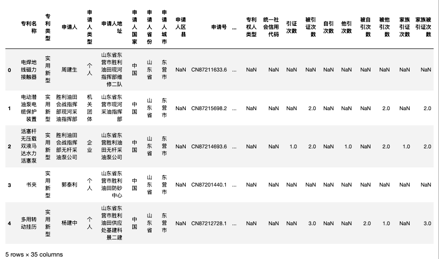

想用 3571w中国专利申请数据集，按年份(或按省份)训练词向量的同学，可以好好看本文，能节省你几十个小时时间。
一、检查数据
这个数据集很大， 如图所示，文件动辄几G

之前分享过 , 面对巨大csv文件，我们要了解内部有哪些字段、字段的含义， 只读取需要的字段，减轻电脑内存压力， 让你能轻松应对几倍于内存的巨大csv文件。
import pandas as pd
#以山东省.csv 为例， 只读第一行(前1行)
df = pd.read_csv('山东省.csv', nrows=1)
df

字段展示的不全，完整的字段应该有
df.columns
Run
Index(['专利公开号', '专利名称', '专利类型', '专利摘要', '申请人', '专利申请号', '申请日', '申请公布日',
'授权公布号', '授权公布日', '申请地址', '主权项', '发明人', '分类号', '主分类号', '代理机构', '分案原申请号',
'优先权', '国际申请', '国际公布', '代理人', '省份或国家代码', '法律状态', '专利领域', '专利学科',
'多次公布'],
dtype='object')
训练词向量主要用文本数据， 在本案例中， 需要的字段 [专利摘要] 。
二、构造语料
在 [3751万专利申请全量数据1985-2022] 文件夹中，
- 新建 [province_corpus] 和 [year_corpus] 两个文件夹
- 新建 [code.ipynb]
构造语料对电脑的性能要求不高， 不论你的电脑是什么配置，基本都能运行， 而且耗时在能接受的范围。
2.1 文件树结构
3751万专利申请全量数据1985-2022
|---安徽省.csv
|---浙江省.csv
|---江苏省.csv
|---...
|---code.ipynb
|---province_corpus
|---安徽省.txt
|---浙江省.txt
|---...
|---year_corpus
|---2022.txt
|---2021.txt
|---...
|---output
|---provin_w2vs
|---安徽省.100.6.bin
|---安徽省.100.6.bin.syn1neg.npy
|---安徽省.100.6.bin.wv.vectors.npy
|---...
|---year_w2vs
|---2022.100.6.bin
|---2022.100.6.bin.syn1neg.npy
|---2022.100.6.bin.wv.vectors.npy
|---...
2.2 按省份构造语料
# 在jupyter内可以得到Cell的运行时间
%%time
import pandas as pd
import os
# 获取 code.ipynb 所在文件夹内的所有csv文件路径列表
csvfs = [f for f in os.listdir('.') if '.csv' in f]
# 构造省份 txt 语料数据
for csvf in csvfs:
print(csvf)
province = csvf.replace('.csv', '')
with open(f'province_corpus/{province}.txt', 'w', encoding='utf-8') as prov_f:
df = pd.read_csv(csvf, usecols=['专利摘要'])
df.dropna(subset=['专利摘要'], inplace=True)
text = ''.join(df['专利摘要'].values)
prov_f.write(text)
Run
上海市.csv
云南省.csv
...
安徽省.csv
CPU times: total: 1500 s
Wall time: 1520 s
构造省份语料用了半个小时。

2.3 按年份构造语料
%%time
import pandas as pd
import os
# 获取 code.ipynb 所在文件夹内的所有csv文件路径列表
csvfs = [f for f in os.listdir('.') if '.csv' in f]
# 构造年份 txt 语料数据
for csvf in csvfs:
df = pd.read_csv(csvf, usecols=['申请日', '专利摘要'])
df.dropna(subset=['申请日', '专利摘要'], inplace=True)
df['申请日'] = pd.to_datetime(df['申请日'], errors ='ignore')
for year in df['申请日'].dt.year.value_counts().index:
print(csvf, year)
with open(f'year_corpus/{year}.txt', 'a+', encoding='utf-8') as year_f:
year_df = df[df['申请日'].dt.year==year]
text = ''.join(year_df['专利摘要'].values)
year_f.write(text)
Run
上海市.csv 2022
上海市.csv 2021
上海市.csv 2020
...
...
安徽省.csv 2022
安徽省.csv 2021
...
...
CPU times: total: 1600 s
Wall time: 1650 s
构造年份语料大概用了半个小时。
三、训练word2vec
需要注意， 训练word2vec需要耗费很大的计算能力， 训练时间需要一两三。 本文使用的cntext2.1.1版本，需要付费获取cntext-2.1.1-py3-none-any.whl。
3.1 安装cntext
将 cntext-2.1.1-py3-none-any.whl 放置于电脑桌面， 打开 命令行cmd (Mac打开terminal)， 输入
cd desktop
pip install distinctiveness
pip install cntext-2.1.1-py3-none-any.whl
有部分使用win的同学，如果按照操作没有安装成功，再试试
cd Desktop
pip install distinctiveness
pip install cntext-2.1.1-py3-none-any.whl
3.2 按省份训练
%%time
import cntext as ct
# 获取 province_corpus 内的语料 txt 文件列表
provin_fs = [f'province_corpus/{f}' for f in os.listdir('data') if '.txt' in f]
for provin_f in provin_fs:
print(provin_f)
w2v_model = ct.W2VModel(corpus_file=provin_f, lang='chinese')
w2v_model.train(vector_size=100, window_size=6, save_dir='provin_w2vs')
print()
Run
province_corpus/上海市.txt
Start Preprocessing Corpus...
Loading model cost 0.632 seconds.
Prefix dict has been built successfully.
Start Training! This may take a while. Please be patient...
Training word2vec model took 3284 seconds
Note: The Word2Vec model has been saved to output\provin_w2vs
province_corpus/云南省.txt
Start Preprocessing Corpus...
Loading model cost 0.632 seconds.
Prefix dict has been built successfully.
Start Training! This may take a while. Please be patient...
Training word2vec model took 564 seconds
Note: The Word2Vec model has been saved to output\provin_w2vs
...
...
CPU times: total: 21354 s
Wall time: 21758 s
训练省份词向量大概用了 6 小时，模型文件保存在 output/provin_w2vs

3.3 按年份训练
%%time
import cntext as ct
# 获取 province_corpus 内的语料 txt 文件列表
year_fs = [f'year_corpus/{f}' for f in os.listdir('data') if '.txt' in f]
for year_f in year_fs:
print(year_f)
w2v_model = ct.W2VModel(corpus_file=year_f, lang='chinese')
w2v_model.train(vector_size=100, window_size=6, save_dir='year_w2vs')
print()
Run
year_corpus/1980.txt
Start Preprocessing Corpus...
Start Training! This may take a while. Please be patient...
Training word2vec model took 0 seconds
Note: The Word2Vec model has been saved to output\year_w2vs
year_corpus/1984.txt
Start Preprocessing Corpus...
Start Training! This may take a while. Please be patient...
Training word2vec model took 0 seconds
Note: The Word2Vec model has been saved to output\year_w2vs
...
...
CPU times: total: 19354 s
Wall time: 20000 s
训练省份词向量大概用了 5.5 小时，模型文件保存在 output/year_w2vs
三、使用word2vec
3.1 导入模型
output/provin_w2vs 和 output/year_w2vs 内有多个模型， 单个的模型文件大约几十M ~ 几百M， 但不建议一次性导入进来。大邓的电脑内存96G，为了省事，就一次性全导入了。
import cntext as ct
from gensim.models import KeyedVectors
provin_w2vs_ = []
provin_w2v_fs = [f'output/provin_w2vs/{f}' for f in os.listdir('output/provin_w2vs') if '.npy' not in f]
for provin_w2v_f in provin_w2v_fs:
provin_w2v = ct.load_w2v(provin_w2v_f)
#如果没有cntext就用注释掉的代码，使用gensim导入
#provin_w2v = KeyedVectors.load(provin_w2v_f)
provin_w2vs_.append(provin_w2v)
import cntext as ct
from gensim.models import KeyedVectors
year_w2vs_ = []
year_w2v_fs = [f'output/year_w2vs/{f}'
for f in sorted(os.listdir('output/year_w2vs'), reverse=True)
if '.npy' not in f]
for year_w2v_f in year_w2v_fs:
year_w2v = ct.load_w2v(year_w2v_f)
#如果没有cntext就用注释掉的代码，使用gensim导入
#year_w2v = KeyedVectors.load(year_w2v_f)
year_w2vs_.append(year_w2v)
3.2 查看词汇量
import re
print('省份Word2vec词汇量')
for provin_w2v_f, provin_w2v in zip(provin_w2v_fs, provin_w2vs_):
province = re.findall('[\u4e00-\u9fa5]+', provin_w2v_f)[0]
print(f'{province} 词汇量: {len(provin_w2v.wv)}')
Run
省份Word2vec词汇量
北京市: 679126
安徽省: 471459
江西省: 216389
重庆市: 269875
澳门特别行政区: 4235
湖北省: 416464
吉林省: 169665
香港特别行政区: 37948
天津市: 323214
湖南省: 341033
辽宁省: 331955
广东省: 935412
黑龙江省: 223448
其他国家: 460
河北省: 281543
内蒙古自治区: 103331
河南省: 381151
福建省: 367768
贵州省: 163641
陕西省: 332231
云南省: 174191
浙江省: 751976
甘肃省: 125789
台湾省: 175827
宁夏回族自治区: 65428
山西省: 163094
山东省: 633187
江苏省: 928838
海南省: 59742
西藏自治区: 14884
青海省: 40403
广西壮族自治区: 237805
四川省: 437751
新疆维吾尔自治区: 100079
上海市: 537777
import re
print('年份word2vec词汇量')
for year_w2v_f, year_w2v in zip(year_w2v_fs, year_w2vs_):
year = re.findall('\d{4}', year_w2v_f)[0]
print(f'{year}: {len(year_w2v.wv)}')
Run
年份word2vec词汇量
2022: 191145
2021: 605364
2020: 903230
2019: 901583
2018: 911762
2017: 881858
2016: 810445
2015: 621050
2014: 388647
2013: 517991
2012: 484417
2011: 281045
2010: 264882
2009: 245851
2008: 218349
2007: 191569
2006: 177269
2005: 153533
2004: 130384
2003: 120306
2002: 102266
2001: 78116
2000: 63233
1999: 53341
1998: 47007
1997: 44221
1996: 42709
1995: 40084
1994: 40987
1993: 42781
1992: 40149
1991: 33159
1990: 28480
1989: 23548
1988: 23502
1987: 19851
1986: 14330
1985: 11535
1984: 2
1980: 2
1900: 1
1899: 4
3.3 语义检查-省份
先检查省份， 查看与[‘创新’, ‘新颖’]最相似的5个词，通过语义捕捉准确与否，粗略判断Word2vec训练效果的好坏。
import re
for provin_w2v_f, provin_w2v in zip(provin_w2v_fs, provin_w2vs_):
try:
province = re.findall('[\u4e00-\u9fa5]+', provin_w2v_f)[0]
wordweigths = provin_w2v.wv.most_similar(['创新', '新颖'], topn=5)
words = [w for w,p in wordweigths]
print(f'{province}: {" ".join(words)}')
except:
print(f'{province}: ')
Run
北京市: 独特 全新 创造性 独创 先进
安徽省: 简洁 独特 精巧 精简 原理简单
江西省: 巧妙 简单实用 简单可靠 简单成本低 精巧
重庆市: 先进 独特 现代 科学 易用
澳门特别行政区:
湖北省: 巧妙 精巧 科学 精良 简洁
吉林省: 先进 科学 推广 独特 可行
香港特别行政区: 工业化生产 公知 相对现有 克服现有 石头纸
天津市: 独特 先进 精巧 科学 构思
湖南省: 科学 简洁 先进 简明 独特
辽宁省: 科学 理念 构思 先进 独特
广东省: 独特 创新性 巧妙 科学 简单巧妙
黑龙江省: 科学 独特 精巧 先进 小巧
其他国家:
河北省: 科学合理 新颖独特 简单实用 科学 精巧
内蒙古自治区: 经济实用 广泛使用 资源丰富 应用广泛 应用范围广
河南省: 简单实用 独特 较为新颖 精巧 简明
福建省: 原理简单 简单实用 巧妙 灵巧 独特
贵州省: 取材方便 价格便宜 安全经济 生产成本低廉 原料易得
陕西省: 独特 简单实用 结构新颖 小巧 简约
云南省: 科学 构思新颖 独特 价廉 简便易行,
浙江省: 独特 科学 全新 巧妙 较为合理
甘肃省: 先进 切实可行 性能优良 独特 一种较为理想
台湾省: 独特 多元 特有 经济 特色
宁夏回族自治区: 重量轻 体积小 性能可靠 具有使用方便 功能丰富
山西省: 独特 科学 先进 简洁 广泛
山东省: 新颖独特 巧妙 精巧 独特 先进
江苏省: 独特 全新 构思 精巧 简单巧妙
海南省: 多样 传统工艺 改变传统 制作过程 精华素
西藏自治区:
青海省: 投饵 具有重量轻 具有成本低 极为 隔热保温
广西壮族自治区: 先进 独特 现代 广泛 明
四川省: 独特 先进 科学合理 人性化 科学
新疆维吾尔自治区: 现代 方
携带方便 广泛 原料来源
上海市: 独特 设计理念 巧妙 科学 构思
从上面的运行结果看， 绝大多数的省份Word2vec都很准确的捕捉到了专利摘要的语义信息。
3.4 语义检查-年份
查看与[‘创新’, ‘新颖’]最相似的5个词，通过语义捕捉准确与否，粗略判断Word2vec训练效果的好坏。
import re
for year_w2v_f, year_w2v in zip(year_w2v_fs, year_w2vs_):
try:
year = re.findall('\d{4}', year_w2v_f)[0]
wordweigths = year_w2v.wv.most_similar(['创新', '新颖'], topn=5)
words = [w for w,p in wordweigths]
print(f'{year}: {" ".join(words)}')
except:
print(f'{year}: ')
Run
2022: 出错率 同井 Git 铝合金膜 传动件传动
2021: 铁前驱 甲基氢 单向阀进液 储存罐 Seq2Seq
2020: 减温层 洗浴间 球形活性炭 OASQ 目标语言句子
2019: 面膜布 自承式 网状加强 铲衣 温头
2018: 简单易行 工艺流程 成本高 克服现有 操作简便
2017: 问题 容易 良好 性能 实用
2016: 相互绝缘 不需 未知 窄边框 耐腐层
2015: 人体温度 压盖 后座 漏电检测 截骨刀
2014: 循环热泵 特细 多处 尾轴 名称内裤
2013: 精制 重复性 强 优势 少
2012: 提升 解决 多种 能够实现 避免
2011: 光亮 具有高 分层 木 品
2010: 转换 具有 强度 整个 时间
2009: 科学 先进 独特 创造性 全新
2008: 独特 先进 全新 思路 创造性
2007: 独特 全新 先进 现代 科学
2006: 先进 独特 全新 新颖性 创造性
2005: 科学 独特 简洁 简捷 独特,
2004: 独特 简单易行 科学 优越性 经济
2003: 独特 科学 多样, 实用 经济实用
2002: 研制 ,采取 多方面 效果差 直接应用
2001: 人造 管材 废弃 有机结合 缺点
2000: 防滑 光亮 着色 系列产品 清晰
1999: ,适于 病人 价廉 ,目前 害虫
1998: 优化 城市 设施 磁化 节水
1997: 病症 手工 透气 不足, 不足
1996: 制造 ,属于 应用 实现 传递文字
1995: 显著疗效 味美 极佳 活血 明目
1994: 样式 坚固耐用, 便利, 巧妙 使用方便安全
1993: 先进 完善 知识性 成本高 功能单一
1992: 经济实用 现行 ,实为 住房 结构设计
1991: 易损坏 保留 庞大 普遍 物两用
1990: 笔算 不足之处, 功能单一 ,需用 结构复杂
1989: 缺点 力小 设施 临时 不便
1988: 设施, 改造 美发 油田 机械装置
1987: 各种类型 用途单一 之用 水上 室内外
1986: 飞行 化油器 具 显微镜 雨水
1985: 很大 浪费 器件 地区 具有结构
1984:
1980:
1900:
1899:
也试了其他的词语，好像只有 2002-2009 之间的语义是准确的。 原因未知，也训练了裁判文书的Word2vec, 年份的是一点准头都没有。专利数据训练的好在还有点准头。
四、研究潜力: 语义变迁研究方法介绍
假设语义都很准的话， 是可以研究 语义变迁 或者 语义差异 的。 但需要注意， 不能直接使用两个年份或者两个省份的中word1和word2的距离来体现语义的变迁或者语义的差异。 如果想做省份间差异或者某省份随时间的变化， 需要用到 对齐算法， 常用的算法是 正交Procrustes矩阵对齐， 使得同省份不同年份或者通年份不同省份的word2vec都有相同的语义空间。
4.1 正交Procrustes算法
正交Procrustes矩阵对齐是一种将两个预训练语言模型的词向量矩阵对齐的方法，使得它们在相同的语义空间中表示。具体来说，它通过计算一个正交矩阵，将两个词向量矩阵进行线性变换，使得它们的Frobenius范数之和最小，从而实现对齐。 gensim库有该算法，大邓后续有时间会分享如何用Procrustes对齐语言模型。
4.2 语义变迁流程图
语义变迁类研究的流程图可参考 DiachronicEmb-BigHistData
4.3 识别语义变化时间点
该项目研究了1800-1910期间， 每10年为一个单位训练词向量， 探究词语变化。以 railway 和 traffic 为例, 先用 余弦相似度(cosine-similarity)算法识别词语语义变化的时间点，如下图
4.4 绘制语义变化轨迹
语义变化轨迹

五、获取资源
5.1 免费
- 年份词向量 链接: https://pan.baidu.com/s/1-EngiWU9IAkqfk2Qf2W5lA 提取码: d925
- 省份词向量 链接: https://pan.baidu.com/s/1TnZf5YkRZMWf4liN04XO_g 提取码: cjs8
5.2 付费
内容整理不易， 如果对本文感兴趣，可加微信 372335839， 备注「姓名-学校-专业」
- 100元 cntext-2.1.1-py3-none-any.whl